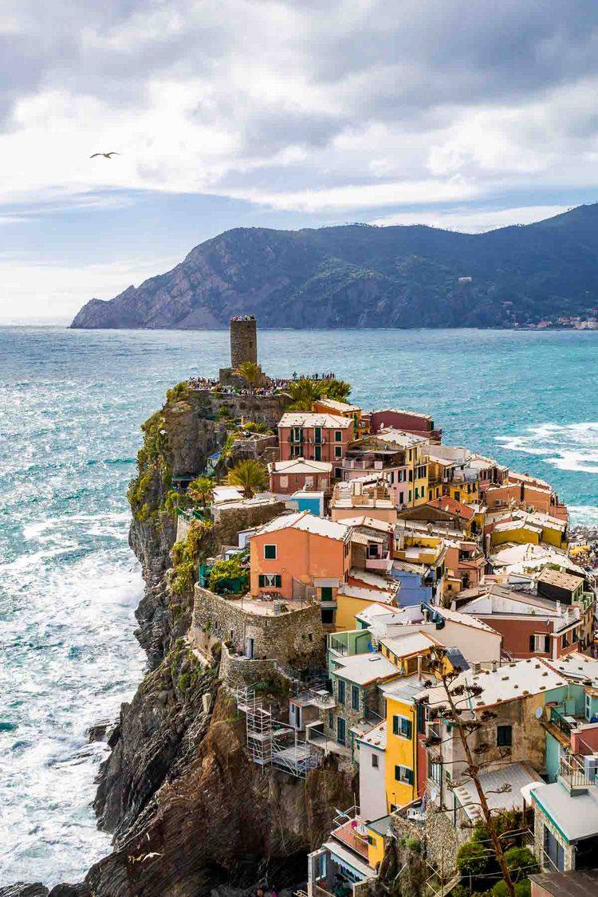
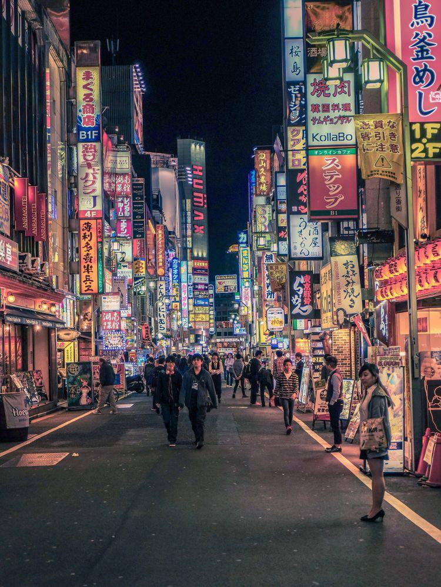
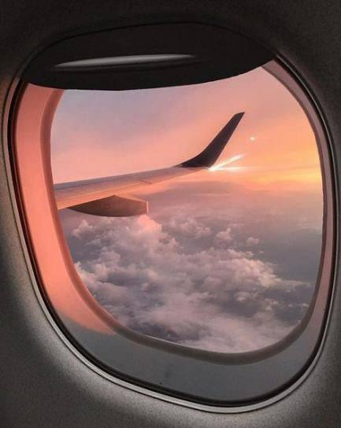
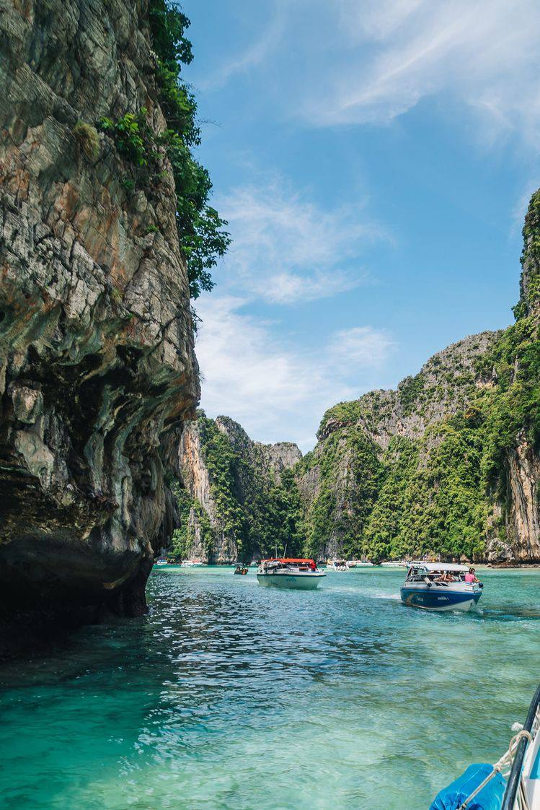

-

Challenging yourself.
You might feel like you’re stuck in a rut in your daily life. Or you’re yearning for something exciting and different. You’re craving new experiences and new challenges. Travel is the ideal place to test yourself. It pushes people to their limits and gets them outside their comfort zone. You’ll discover how resourceful you are when you’re exposed to new places, people and experiences. Maybe it’s finding your way around a busy city. Or ordering a meal when you don’t speak the language. Or zip-lining. You’ll feel pride when you finish your trip successfully. Overcoming challenges will bring you joy and energy for future tests. You’ll realize how capable you are and build your confidence.
-

Learning.
Learning is a strong reasons/reason why people love to travel. They want to experience something unfamiliar and leave with new skills or knowledge. Seeing the world is more educational than a high school or college class. This condensed crash course in discovering how the rest of the world lives actually will cover subjects like history, geography and sociology. Every destination has something unique to teach visitors, and immersing themselves in a completely different world is the best learning experience.
-

Exploring.
Travel takes us out of our comfort zones and inspires us to see, taste and try new things. It constantly challenges us, not only to adapt to and explore new surroundings, but also to engage with different people, to embrace adventures as they come and to share new and meaningful experiences with friends and loved ones. Whether you seek adrenaline and non-stop activity, or unapologetic siestas and ultimate relaxation, travel gives us the opportunity to explore with an open heart and an open mind.
-

Relaxing.
Our lives are time-starved and technology-driven and, let’s be honest, it’s not often that we actually take the necessary time to de-stress and truly switch off. Travel allows us to escape life’s daily demands, dramas and deadlines and enables us to clear our minds. It encourages us to recharge our batteries and to truly disconnect (from our phones, Wi-Fi, emails, laptops, social media, etc.) in order to reconnect (with ourselves, each other and the natural environment).
-
Memories and experiences.
Some of my most cherished memories are from the times when I was travelling. If you travel, you can experience things that you could never experience at home. You may see beautiful places and landscapes that do not exist where you live. You may meet people that will change your life, and your thingking. You may try activities that you have never tried before.